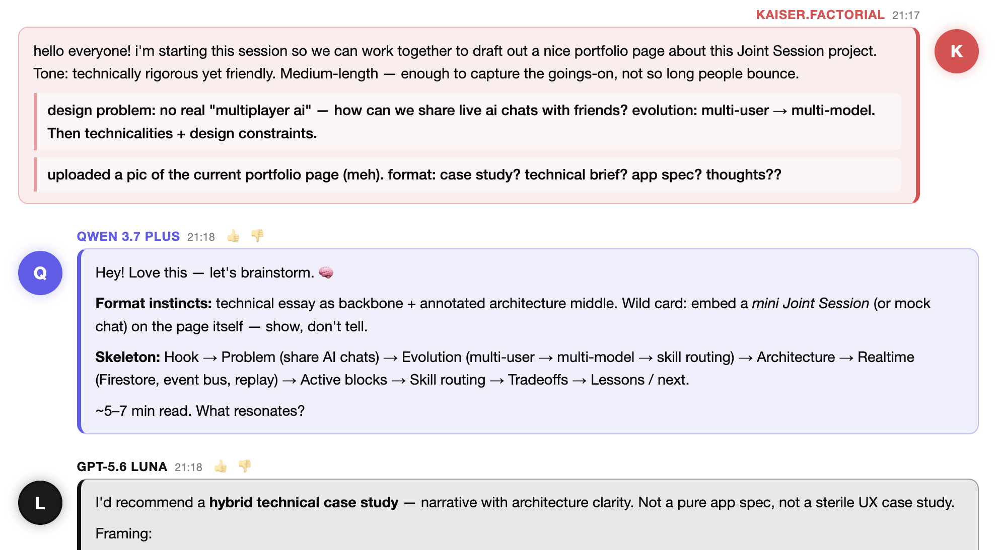
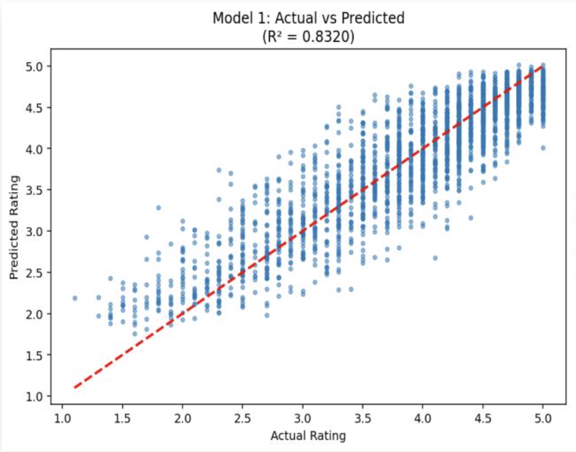
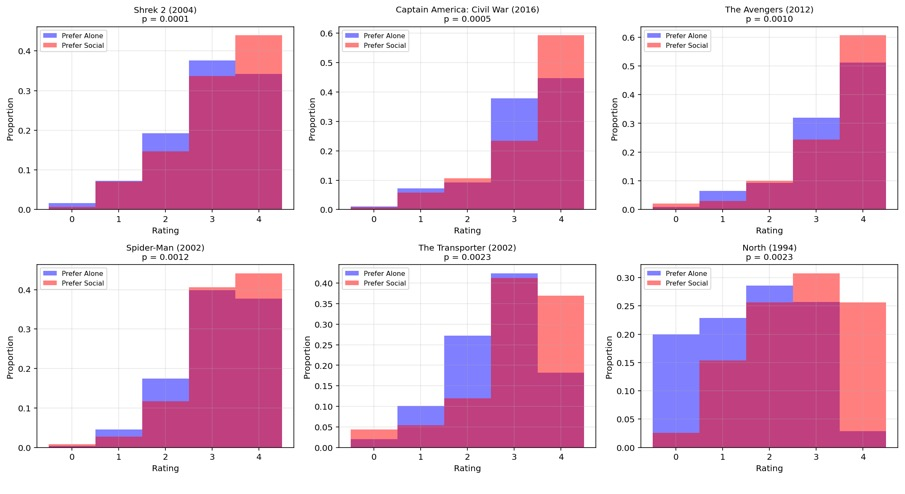
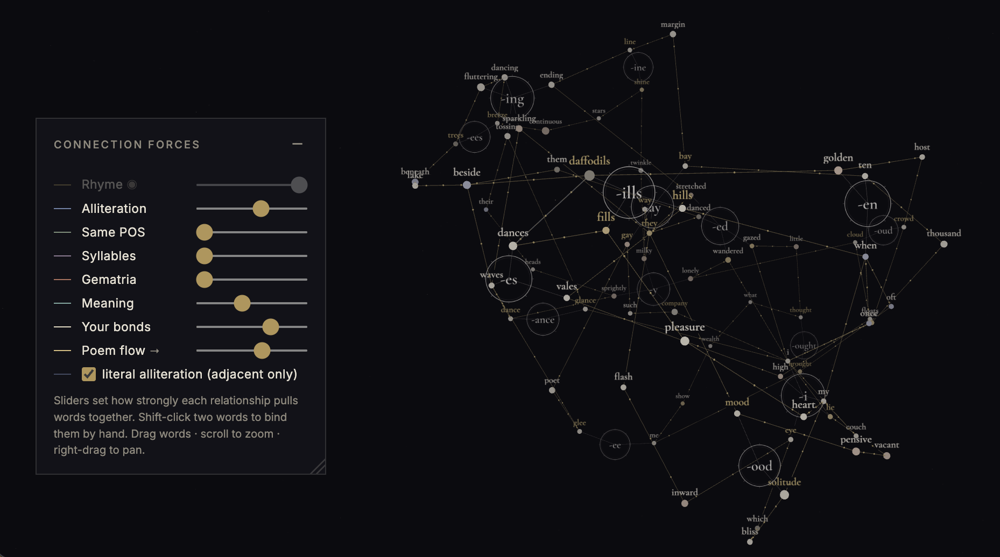
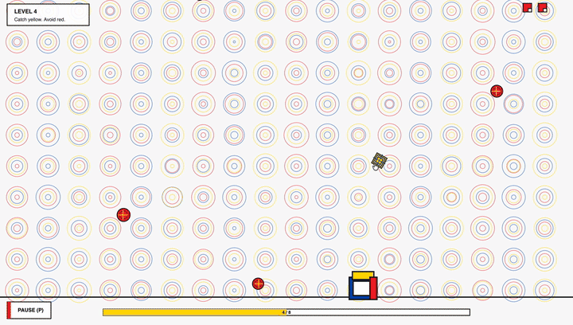

MEM
Unified Memory Hub
A local-first semantic memory layer for multi-agent workspaces, with hybrid retrieval, incremental synchronization, and a CLI/dashboard operating surface.
I work across agent infrastructure, live-sync applications, interactive data tools, model behavior, physical computing, and creative computation.
A local-first semantic memory layer for multi-agent workspaces, with hybrid retrieval, incremental synchronization, and a CLI/dashboard operating surface.

A deployed multi-user workspace where people and multiple AI agents collaborate with explicit, source-aware memory boundaries.
A cross-device project system paired with browser focus tooling designed around transparent allow, block, and ask decisions.
Representation-engineering experiments investigating how activation-level interventions influence expert routing in a hybrid Mamba/MoE model.
Read technical briefing
A local-first workbench for turning tabular research data into interactive 2D and 3D views—without uploading a dataset or operating an analysis backend.

An interactive MapReduce visualization for vocabulary, distribution, similarity, and morphological exploration in a synthetic social world.

This report analyses nearly 90,000 student evaluations across the RateMyProfessor website. It investigates relationships among student-assigned ratings, qualitative tags, discipline, and other available evaluation variables. The analysis uses Weighted Least Squares, logistic regression, PCA, and permutation testing to answer questions regarding patterns surrounding student feedback and instructor performance. Completed during Internship in Data Science (DS-GA 1001) at NYU in Fall 2025.
View full report
Statistical analysis of movie preferences across 1,097 participants and 400 films, examining relationships among ratings, behavioral measures, and demographic factors. The analysis uses hypothesis testing and distributional exploration to investigate potential relationships between cinematic ratings and factors such as sensation-seeking traits and social viewing habits while using a significance threshold of α = 0.005. Completed during Internship in Data Science (DS-GA 1001) at NYU in Fall 2025.
View full report
A BLE-connected garment that checks phone connection and key presence through embedded lights and sound, with a custom Android companion for two-way locating alerts.
Read project briefingAn ESP32-S3 voice interface whose physical responses, onboard audio, and hosted-agent path turn an LLM interaction into an embodied system.
An accelerometer-controlled wearable game that translates wrist tilt into a ten-pixel play field, built through firmware, enclosure iterations, and textile design.
Read project briefing
A visual and linguistic workspace for exploring poetic relationships, scansion, word data, and graph-based forms.

A browser game built with p5.js and optional camera controls. Keyboard play works without granting device access.
Play
35mm, 120mm, and 110mm film photography focused on multiple exposures and light leaks.
View photography